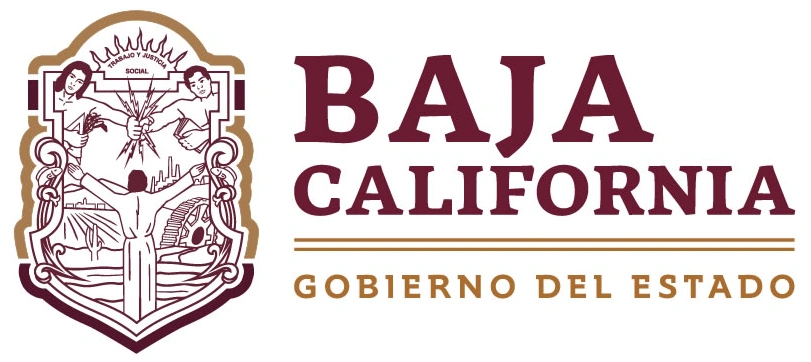
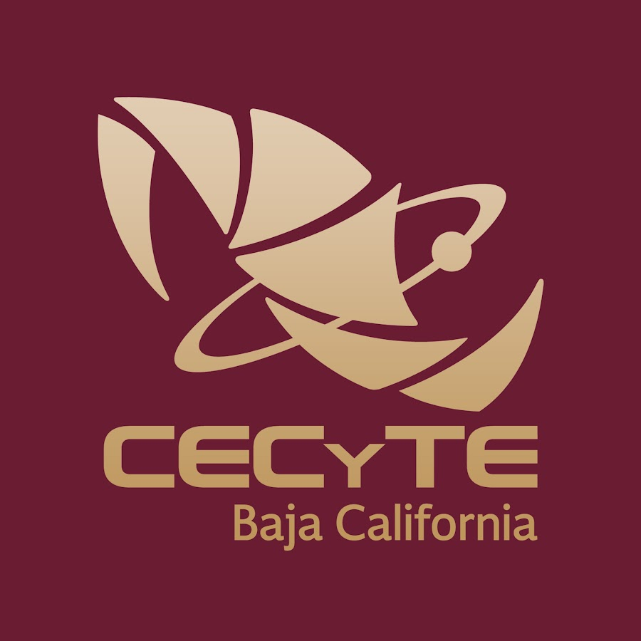

Encuesta de Seguimiento de Egresados
CECyTE Baja California

Datos Generales
Nombre completo
Correo electronico
Grupo
Código Postal
Teléfono/celular(10 digitos)
¿Con quién vives?
Seleccione una opción
Compartiendo vivienda con familiares(Tios, Abuelos, etc.)
Pareja (con o sin hijos)
Amigos
con tus padres
Solo
¿Participaste en algún programa especial?
Seleccione una opción
Militarizado
Formación dual
Becas
Prgrama incluyente
No aplica
¿Autorizas compartir tu información para alguna empresa o vacante?
Seleccione una opción
Si
No
¿Tienes alguna discapacidad?
Seleccione una opción
Si
No
¿Perteneces a un grupo étnico?
Seleccione una opción
Si
No
¿Hablas alguna lengua?
Seleccione una opción
Si
No
¿Hablas otro idioma diferente al español?
Seleccione una opción
Si
No
¿Has emprendido algún negocio?
Seleccione una opción
Si
No
¿Al egresar del bachillerato continuaras con tus estudios?
Seleccione una opción
Si
No
¿Aprovaste el examen de admision?
Seleccione una opción
Si
No
¿A que institucion deseas entrar?
Seguimiento de Egresados
¿En que frecuencia usas tus conocimientos y habilidades que adquiriste en el Bachillerato?
Seleccione una opción
Muy frecuente
Frecuente
Poco frecuente
Rara vez
¿Qué conocimientos técnicos consideras que te hicieron falta durante tu Bachillerato?
Seleccione una opción
Matematicas
Ciencias
Competencias relacionadas con tu carrera
Investigación
¿Qué habilidades consideras que te hicieron falta durante tu Bachillerato?
Seleccione una opción
Comunicacion
Trabajo en equipo
Liderazgi
¿Actividad a la que te estas dedicando?
Seleccione una opción
Matematicas
Ciencias
Competencias relacionadas con tu carrera
Investigación
Continuidad de Estudios
Nombre de la institución donde estas estudiando actualmente:(Nota:Nombre completo sin abreciaturas)
Ubicación
Seleccione una opción
Dentro del país
Fuera del país
¿Que tipo de institución es?
Seleccione una opción
Pública
Privada
Nombre de la carrera en la que estas estudiando:(Nota:Nombre completo sin abreviaturas)
¿La carrera que estas estudiando actualmente es afín a la que estudiaste en el bachillerato?
Seleccione una opción
Si
No
Datos Laborales
Nombre de la empresa en donde estas trabajando
Giro de la empresa:(Ejemplo:Automotriz, Servicios, Agropecuario, Industrial, Manufactura.)
¿ Cual es tu puesto o la actividad principal que realizas en tu trabajo?
Esta actividad o puesto ¿tiene relacion con la carrera que estudias en el bachillerato?
Seleccione una opción
Si
No
¿Cuanto ganas aproximadamente mensualmente?
Seleccione una opción
0 a 3000
3000 a 6000
6000 a 10000
Más de 10000
¿Cuales son las causas por las que no estas estudiando o trabajando?
Seleccione una opción
Falta de interés
Falta de recursos
Trabajo
Embarazo/Maternidad
No encuentro trabajo
Otro
Otra razón
Comentarios y sugerencias
Enviar encuesta
✅ Respuesta enviada correctamente